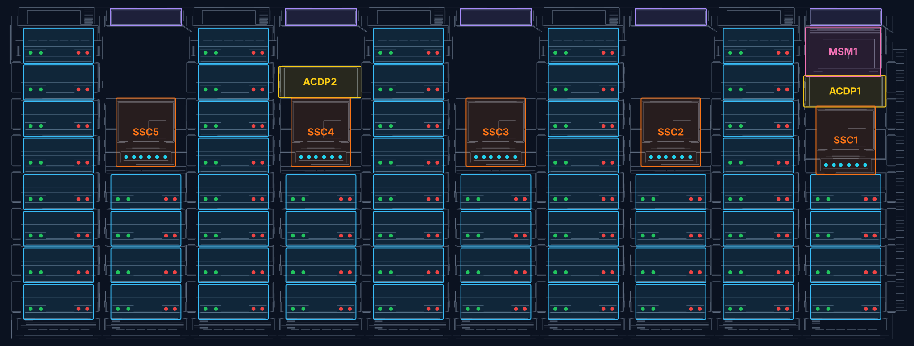

Native AutoCAD, true scale
Opens the DXF exactly as AutoCAD sees it — lines, arcs, splines, circles, blocks — in millimetres. No pictures, no calibration clicks.
 An AYK Energy productFor marine battery rack engineers
An AYK Energy productFor marine battery rack engineers
WireFlow reads the rack drawing you already have, in true millimetres. Teach it one battery module, one SSC and one junction box — it finds every other copy, places every terminal and applies AYK's wiring and numbering rules. Your engineers check and confirm instead of drawing by hand.

Measured on AYK rack drawing 111 (AutoCAD 2000 DWG converted to DXF).
Engineered by AYK Energy
WireFlow is AYK Energy's own engineering tool. It is shaped around AYK battery modules, SSCs, junction boxes and the wiring rules our engineers sign off — and it asks the engineer whenever a rule is not yet defined.
Features
Engineers draw rack wiring in AutoCAD, module by module. WireFlow keeps the drawing and the rules, and takes away the repetitive part.
Opens the DXF exactly as AutoCAD sees it — lines, arcs, splines, circles, blocks — in millimetres. No pictures, no calibration clicks.
Box one module and click its four terminals. WireFlow matches the exact geometry and finds every identical module, SSC, junction box, ACDP and MSM.
SSC1 and ACDP1 are proposed as the ones closest to the MSM, for the shortest cables. Modules per SSC are checked against the drawing.
Every SSC, ACDP and MSM name is confirmed by an engineer. Counts that do not add up, duplicate names and rule breaks are flagged before anything is saved.
Parts taught once are saved on the device. The next rack with the same modules is recognised as soon as it opens.
Runs in the browser. Drawings and parts never leave the engineer's computer, and there is no account to manage.
How it works
Convert the DWG with the included script (it uses your installed AutoCAD) and drop the DXF into WireFlow.
Box one battery module and click its terminals; box one SSC with its connector strip, one junction box, ACDP and MSM.
Check the proposed SSC, ACDP and MSM names and enter how many modules each SSC controls.
Module numbering without power crossings, cable routing and output back to AutoCAD on its own layers.
Engineering rules
WireFlow follows rules agreed with AYK engineering. Where a rule is not defined yet, it asks instead of inventing one.
Roadmap
FAQ
ASCII DXF exported from AutoCAD. DWG files are converted to DXF first with the included script (it uses your installed AutoCAD) or with AutoCAD Save As DXF.
No. The drawing is read and stored in your browser on your device. There is no account and no upload.
Yes. You box one example of each part and click its terminals once; WireFlow finds every identical copy by its exact geometry.
WireFlow proposes them (SSC1 and ACDP1 are the ones closest to the MSM) and the engineer confirms or renames every label and enters the number of modules per SSC.
Not on DXF drawings yet. Recognition, numbering rules and confirmations are available now; crossing-free power routing and AutoCAD output are the next release.
Drop a DXF and teach one module. It takes about a minute.
Open WireFlow